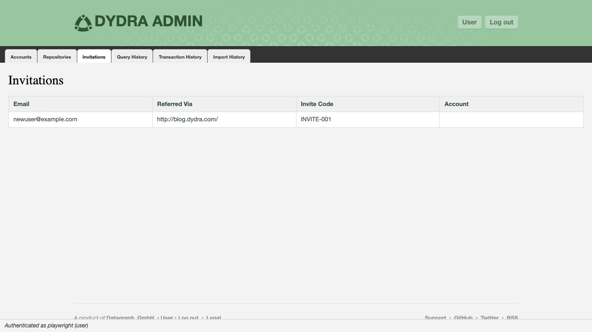
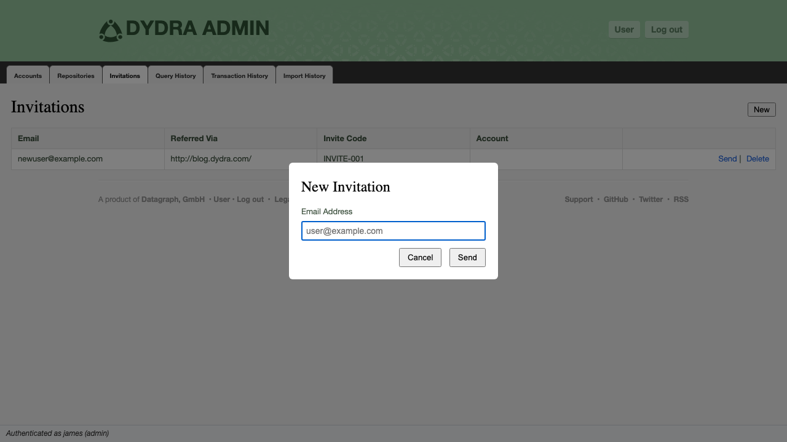

Dydra admin console · manual · 05
Invitation Management
Issue, resend, and retract access invitations.
Dydra admin console · manual · 05
Issue, resend, and retract access invitations.
The Invitations tab presents the list of pending access invitations. An invitation is a record associating an email address with an invite code; when a prospective user follows the invitation link, the code is validated and an account is created. The tab provides controls to create new invitations, resend existing ones, and delete invitations that are no longer required.
Invitation data is retrieved from the application's state model, which sources it from the system's invitation endpoint.

Figure 5.1: The Invitations tab showing pending invitations.
| Column | Contents | Notes |
|---|---|---|
| The invited email address | The address to which the invitation email is sent. | |
| Referred Via | HTTP referrer recorded at invitation origin | The URL from which the invitation request originated. Useful for auditing invitation sources. |
| Invite Code | The unique invitation token | The opaque string embedded in the invitation URL. Presented in the interface for reference and verification purposes. |
| Account | The account created from this invitation, if any | Rendered as a link to that account's profile in the user application. Empty if the invitation has not yet been accepted. |
| Actions | Send; Delete (both Admin only) | Suppressed for operator-level sessions. |
| Control | Availability | Function |
|---|---|---|
| New | Admin only | Opens the New Invitation dialog. See Section 5.4. |
New invitations are issued from the New Invitation dialog.
Step 1
Click New in the tab controls. The New Invitation dialog opens.

Figure 5.2: The New Invitation dialog.
Step 2
Enter the recipient's email address in the provided field.
Step 3
Click Send (or press Enter). The application issues POST {host}/invitations with the email address as the request body parameter.
Step 4
On success, the dialog closes and a confirmation alert is displayed. The new invitation record appears in the table.
Step 5
On error, the response message is displayed within the dialog. The dialog remains open for correction.
The Send action on each row retransmits the invitation email to the recorded address. This is useful when the original email was not received or has expired from the recipient's inbox.
Step 1
Click Send on the row of the invitation to resend.
Step 2
The application issues POST {host}/invitations with the email address. The invitation record is not modified; only the email is retransmitted.
Step 3
A brief confirmation message is displayed in the location bar.
Deleting an invitation removes the record from the system. If the invitation has not yet been accepted, the associated invite code is invalidated and the recipient will be unable to use it to create an account.
Step 1
Click Delete on the row of the invitation to remove.
Step 2
A confirmation prompt is displayed, identifying the invitation by email address.
Step 3
Confirm the deletion. The application issues DELETE {host}/invitations/{email}.
Step 4
The invitation record is removed from the table.
Accepted invitations
Deleting the invitation record for an email address that has already been used to create an account does not affect the account itself. The account remains active. The invitation record is merely a bookkeeping entry and its deletion has no effect on established accounts.
| Account Column Value | Interpretation |
|---|---|
| (empty) | The invitation has been issued but not yet accepted. The invite code remains valid. |
| Account link present | The invitation has been accepted and the linked account was created. The invitation record is retained for audit purposes. |